Semana 7
FECHA
04/05/22
HORA
4:00-6:00 P.m
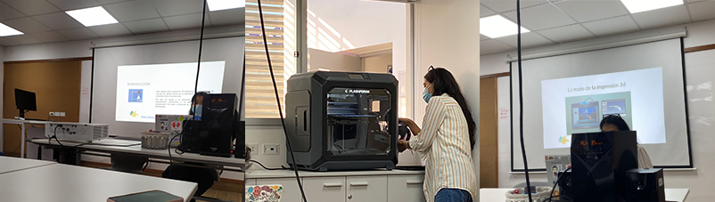
¿Qué es la impresión 3d?
Es el proceso mediante el cual se crea un objeto físico sobre la base de un modelo digital. El objeto digital que se ha de imprimir se deconstruye utilizando programas laminadores (slicers) y luego se reconstruye mediante una impresora 3D en un objeto físico.

Línea histórica de la impresora 3d
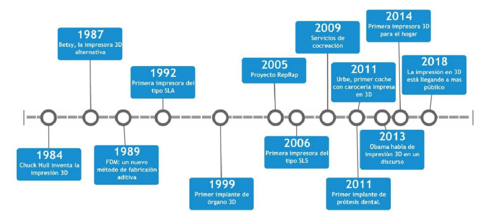| Ventajas | Desventajas |
|
-Customization y personalization. -Sin necesidad de herramientas. -Velocidad y ahorro de costes. -Menos residuos, sostenibilidad, ecológico. -Reciclaje y ahorro de materiales. |
-Copia de piezas importantes en 3D. -Creación de armas y objetos peligrosos con las impresoras 3D. -La piratería en la impresión 3D. -Intoxicación con filamento ABS. |
El proceso de impresión 3D
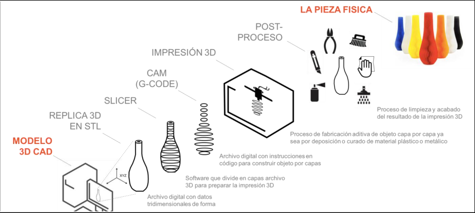Tipos de de impresoras 3d
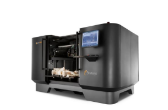Impresión a base de metal en 3d
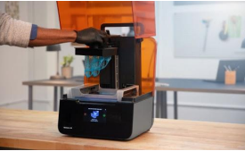Estereolitografía (SLA)
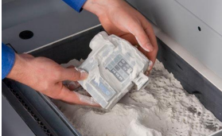Sinterización láser selectiva
Tipos de materiales para la impresión fdm
Rango de temperatura: 180 – 220 ºC
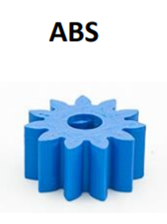Rango de temperatura: 210 – 250 ºC
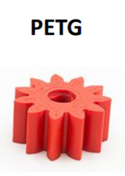Rango de temperatura: 210 – 250 ºC
Áreas de aplicación de la impresión 3d
*ARTESANIA
*AUTOMOTRIZ
*ARQUITECTURA
*MEDICINA
*EDUCACION
Impresoras 3D
En el laboratorio se encontro estas impresoras.
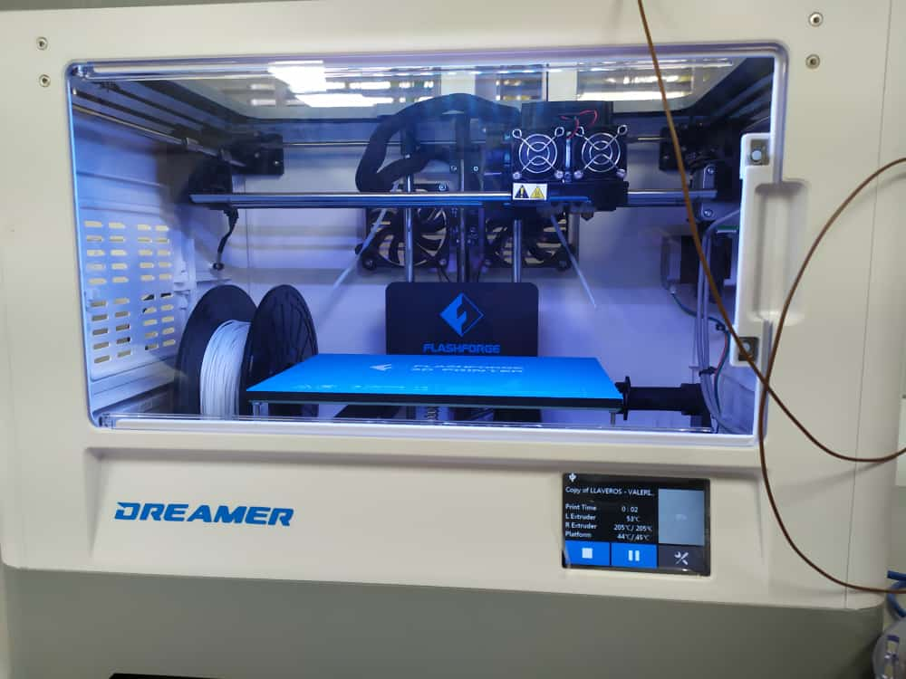 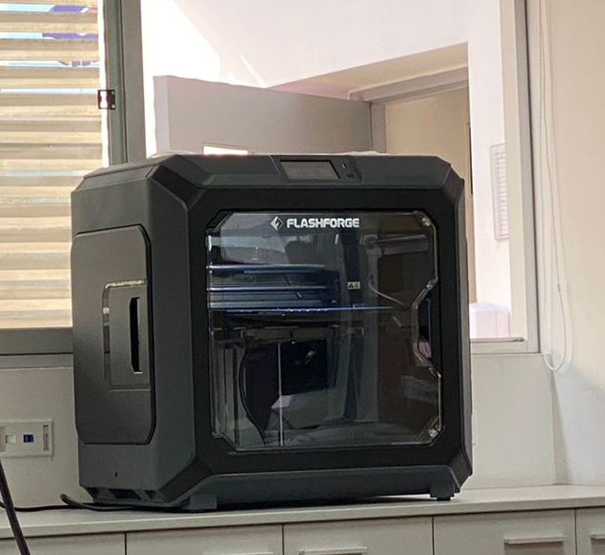 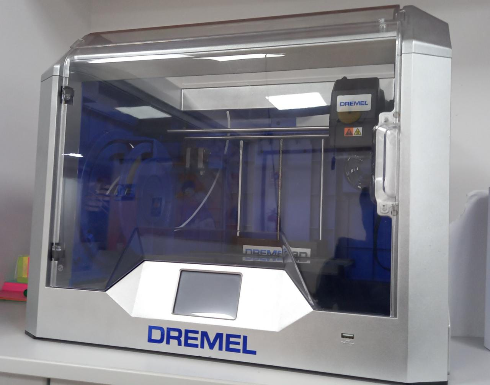Impresión en clase
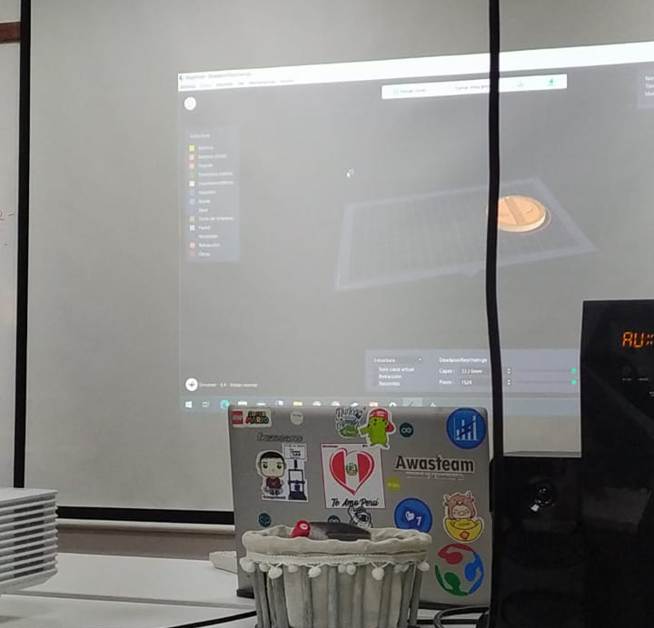 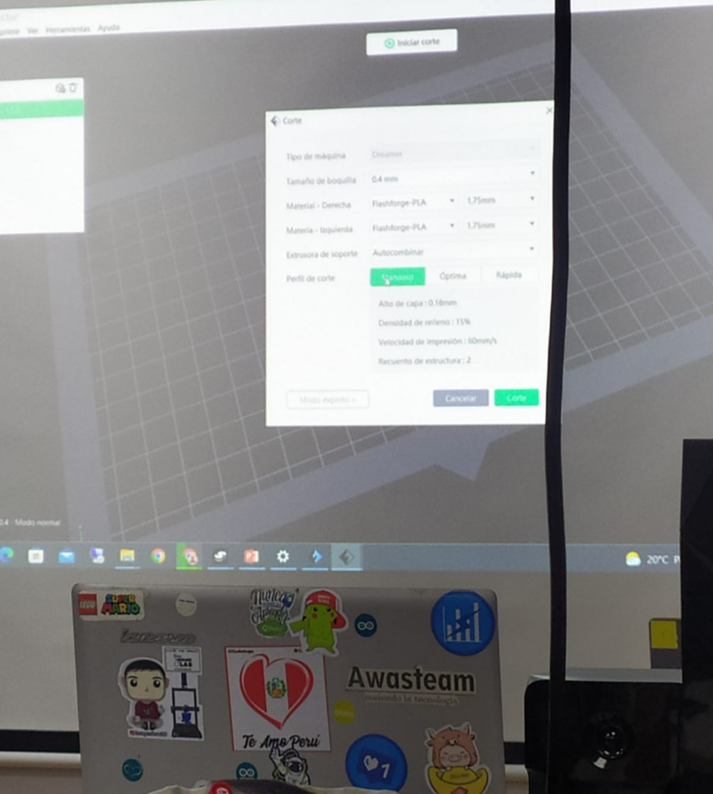 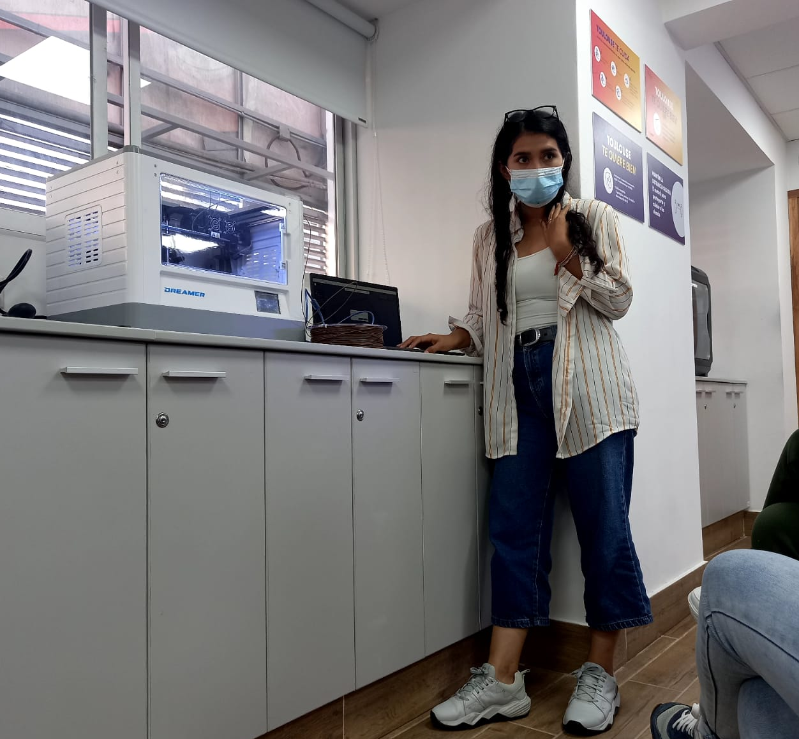
Flashprint 5:
El software Flashprint desarrollado por la misma compañía que fabrica los equipos, combina simplicidad con funcionalidad. Los usuarios iniciales pueden utilizar los parámetros preestablecidos e imprimir objetos de calidad en cuestión de minutos.
LINKImprecion 3d
Descargamos los llaveros que habíamos realizado en laboratorio 1 y lo importamos a Flashprints.
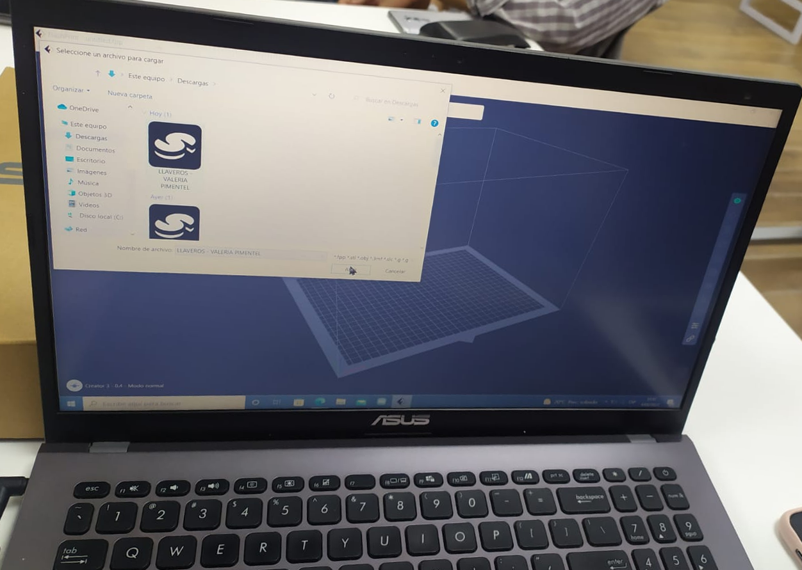Cuando ya importamos, buscamos el nombre de la impresora que vamos a usar, para la impresión.
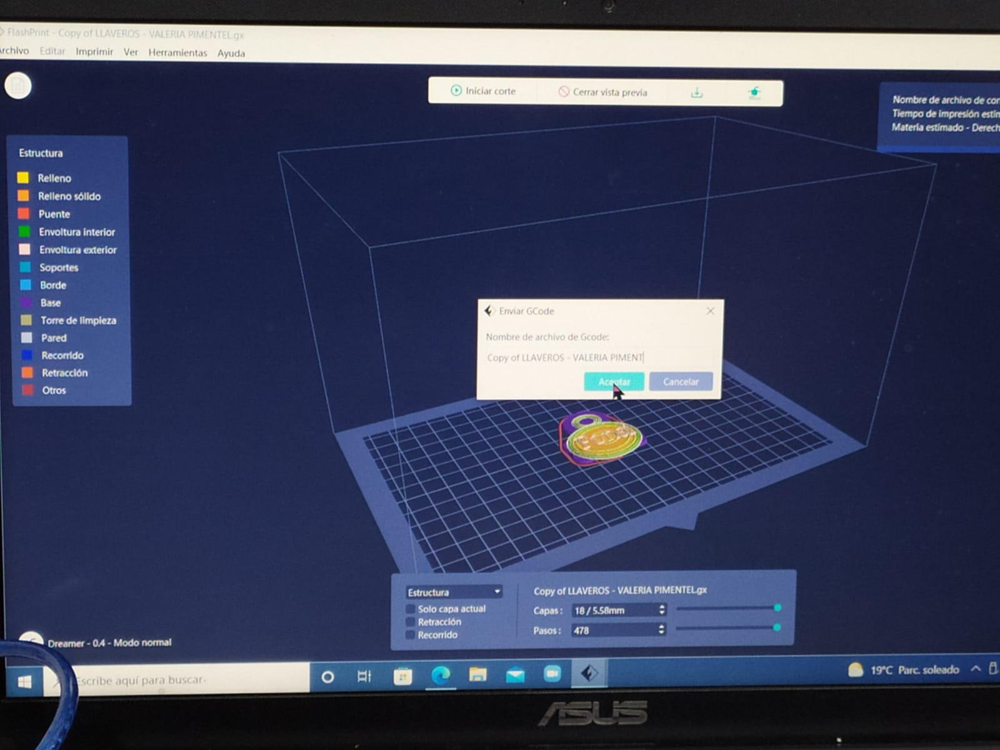Después de hacer algunas modificaciones en el programa de Flashprints Conectamos laptop a la impresora.
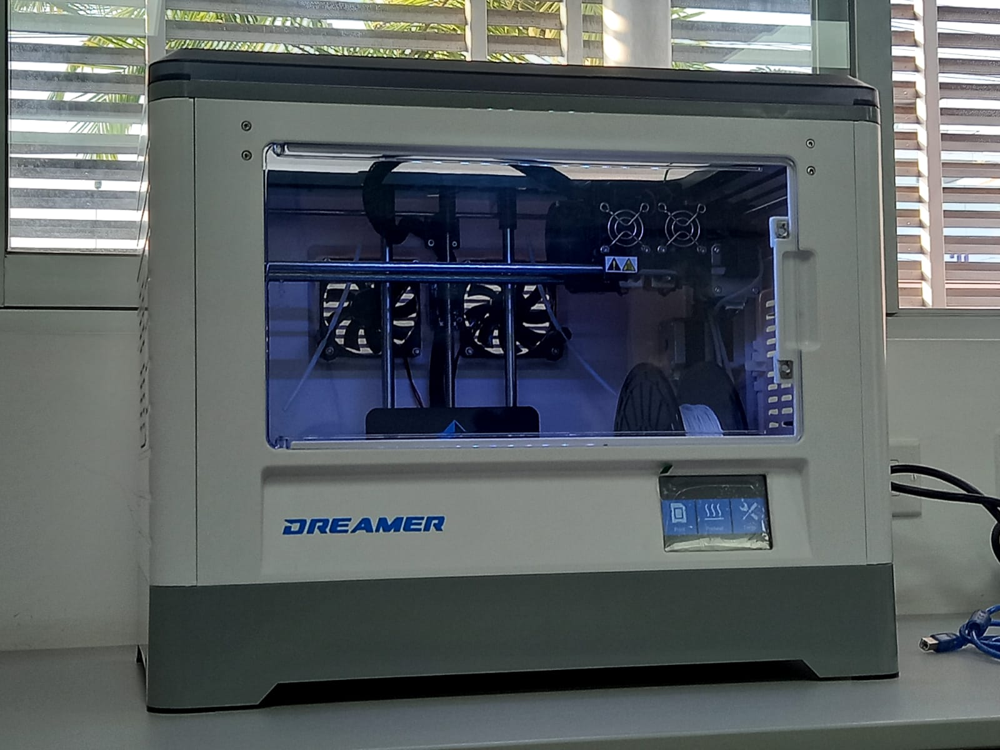Dato importante
El tipo de GCode es: Martin